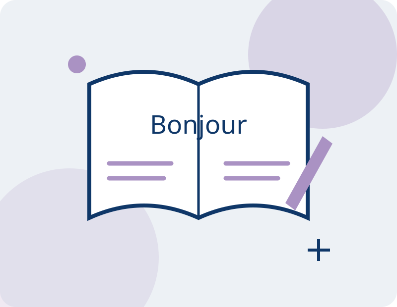

Français法语课French
Prendre sa place dans la langue française.走进法语，连接生活与学习。Connect with life through French.
Développer la compréhension et l’expression pour mieux participer aux échanges et à la vie quotidienne.培养理解与表达能力，让法语成为参与交流、学习与日常生活的工具。Develop understanding and expression for conversations, learning and everyday life.
Se renseigner / s’inscrire课程咨询与报名Enquire / register
Pistes d’apprentissage学习方向Learning areas
Parler et échanger口语与交流Speaking and interaction
Lire et rédiger阅读与写作Reading and writing
À qui s’adresse ce cours ?适合哪些学习者？Who is this course for?
Enfants, adolescents et adultes ; objectifs et accompagnement à définir ensemble.面向儿童、青少年与成人，共同沟通学习目标与适合的安排。Children, teenagers and adults; discuss learning goals and suitable support together.
Construisons votre parcours ensemble一起选择适合的学习安排Plan your learning with us
Pour les horaires, les tarifs, le lieu et les places disponibles, contactez l’association.上课时间、费用、地点与名额请联系协会确认。Contact the association to confirm schedules, fees, location and availability.
WeChat : Beyonce5819
clubbilingueps@gmail.com